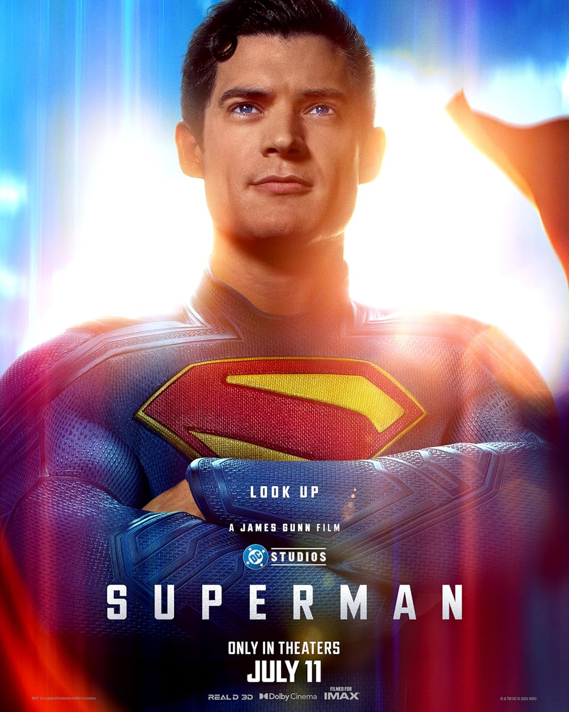

Filmes Para Assistir Domingo á Noite
Invocação do Mal 4 - O último caso da família Warren (Terror, 16+)
Vingadores: Ultimato - A épica conclusão da saga do infinito (Ação, 12+)

Quando as Luzes se Apagam - Terror psicológico com aparições assustadoras (Terror, 14+)
Gente Grande - Diversão e nostalgia com antigos amigos (Comédia, Livre)

Superman - O homem de aço retorna aos cinemas (Ação, 12+)

Até o Último Homem - A emocionante história de um herói sem armas (Drama/Guerra, 16+)

À Espera de um Milagre - Drama tocante com Tom Hanks no corredor da morte (Drama, 14+)

Django Livre - Um ex-escravo em busca de justiça no velho oeste (Ação/Faroeste, 18+)

Bad Boys: Até o Fim - A dupla mais explosiva do cinema está de volta (Ação, 16+)

Se Beber, Não Case! - Uma despedida de solteiro que deu muito errado (Comédia, 16+)